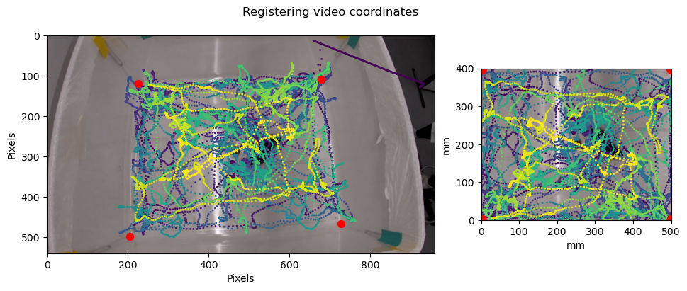

Experiment Data Conversion
Contents
Experiment Data Conversion¶
import pandas as pd
import numpy as np
import cv2
import matplotlib.pyplot as plt
import shutil
import json
from skimage import draw
from itertools import combinations
from dataclasses import dataclass
from PIL import Image, ImageOps
from pathlib import Path
from typing import Any, List
from tqdm import tqdm
# These are local files in the repository
from telfer_video_io import get_fname, VideoWriter, VideoReader
from telfer_transforms import transform_array_to_perspective, transform_dataframe_to_perspective, get_homography
Data Folders¶
PROJECT_DIR = Path("/home/andretelfer/shared/curated/fran/v4/")
assert PROJECT_DIR.exists()
datafiles = pd.read_csv(PROJECT_DIR / 'datafiles.csv')
items = []
for video in datafiles.video:
fname = Path(video).parts[-1].split('.')[0]
dlc_file = next(PROJECT_DIR.glob(f"mouse_labels/{fname}DLC*.h5"))
items.append({'Video': video, 'Keypoints': '/'.join(dlc_file.parts[-2:])})
datafiles = pd.DataFrame(items)
datafiles
| Video | Keypoints | |
|---|---|---|
| 0 | videos/f1.mp4 | mouse_labels/f1DLC_resnet50_agrpNov19shuffle1_... |
| 1 | videos/f2.mp4 | mouse_labels/f2DLC_resnet50_agrpNov19shuffle1_... |
| 2 | videos/f3.mp4 | mouse_labels/f3DLC_resnet50_agrpNov19shuffle1_... |
| 3 | videos/f4.mp4 | mouse_labels/f4DLC_resnet50_agrpNov19shuffle1_... |
| 4 | videos/f5.mp4 | mouse_labels/f5DLC_resnet50_agrpNov19shuffle1_... |
| ... | ... | ... |
| 75 | videos/m28.mp4 | mouse_labels/m28DLC_resnet50_agrpNov19shuffle1... |
| 76 | videos/m29.mp4 | mouse_labels/m29DLC_resnet50_agrpNov19shuffle1... |
| 77 | videos/m30.mp4 | mouse_labels/m30DLC_resnet50_agrpNov19shuffle1... |
| 78 | videos/m31.mp4 | mouse_labels/m31DLC_resnet50_agrpNov19shuffle1... |
| 79 | videos/m32.mp4 | mouse_labels/m32DLC_resnet50_agrpNov19shuffle1... |
80 rows × 2 columns
treatments = pd.read_csv(PROJECT_DIR / 'experiment-data.csv')
treatments.injected_with = treatments.injected_with.str.replace('/', '-')
treatments
| id | latency_to_approach | time_in_corners | time_eating | amount_eaten | does_not_leave_corner | does_not_approach | injected_with | |
|---|---|---|---|---|---|---|---|---|
| 0 | f1 | 15.00 | 136.99 | 9.84 | 0.3 | False | False | saline-ghrelin |
| 1 | f2 | 36.43 | 122.55 | 0.00 | 0.0 | False | False | saline-saline |
| 2 | f3 | 17.38 | 32.54 | 1.12 | 0.0 | False | False | mt2-saline |
| 3 | f4 | 27.95 | 129.35 | 2.58 | 0.1 | False | False | mt2-ghrelin |
| 4 | f5 | 9.88 | 201.56 | 2.73 | 0.0 | False | False | saline-saline |
| ... | ... | ... | ... | ... | ... | ... | ... | ... |
| 75 | m28 | 123.63 | 509.66 | 0.00 | 0.0 | False | False | mt2-ghrelin |
| 76 | m29 | 16.22 | 343.84 | 17.49 | 0.1 | False | False | saline-saline |
| 77 | m30 | 18.42 | 319.65 | 7.28 | 0.1 | False | False | saline-ghrelin |
| 78 | m31 | 540.00 | 443.65 | 0.00 | 0.0 | False | False | mt2-saline |
| 79 | m32 | 17.14 | 327.94 | 3.09 | 0.0 | False | False | mt2-ghrelin |
80 rows × 8 columns
registration_points = pd.read_csv(PROJECT_DIR / "registrations.csv")
registration_points['video'] = registration_points['axis-0'].apply(lambda x: datafiles.Video.iloc[x])
registration_points = registration_points.rename(columns={'axis-1': 'x', 'axis-2': 'y'})
registration_points.sample(3)
| index | shape-type | vertex-index | axis-0 | x | y | video | |
|---|---|---|---|---|---|---|---|
| 31 | 7 | polygon | 3 | 7 | 474.043305 | 237.664651 | videos/f8.mp4 |
| 33 | 8 | polygon | 1 | 8 | 149.671753 | 667.907474 | videos/f9.mp4 |
| 252 | 64 | polygon | 0 | 63 | 72.333165 | 252.681853 | videos/m16.mp4 |
Registration¶
Define the schema of the box in mm
w, h = 500, 400
p = padding = 0
OUTPUT_WIDTH = w #+ padding*2
OUTPUT_HEIGHT = h #+ padding*2
REGISTRATION_POINTS = np.array([
[0+p, 0+p],
[w+p, 0+p],
[w+p, h+p],
[0+p, h+p],
])
REGISTRATION_POINTS
array([[ 0, 0],
[500, 0],
[500, 400],
[ 0, 400]])
for video, points in registration_points.groupby("video"):
points = points[["y", "x"]].values
T = get_homography(points, REGISTRATION_POINTS)
row = datafiles.loc[datafiles.Video == video].iloc[0]
keypoints = pd.read_hdf(PROJECT_DIR / row.Keypoints)
keypoints = keypoints.where(keypoints.xs("likelihood", level="coords", axis=1) > 0.6)
keypoints = keypoints.interpolate()
centroid = keypoints.groupby(axis=1, level="coords").mean()
reader = VideoReader(PROJECT_DIR / video)
frame = reader[1000]
plt.figure(figsize=(12, 4))
gs = plt.GridSpec(1, 10)
plt.subplot(gs[:7])
plt.imshow(frame)
c = np.arange(centroid.shape[0])
plt.scatter(centroid.x, centroid.y, c=c, s=1)
y, x = points.T
plt.scatter(y, x, color='red', s=50)
plt.xlabel("Pixels")
plt.ylabel("Pixels")
plt.subplot(gs[7:])
plt.imshow(cv2.warpPerspective(frame, T, (w,h)))
plt.xlabel("mm")
plt.ylabel("mm")
keypoints = transform_dataframe_to_perspective(keypoints, T)
centroid = keypoints.groupby(axis=1, level="coords").mean()
c = np.arange(centroid.shape[0])
plt.scatter(centroid.x, centroid.y, c=c, s=1)
plt.xlim([0, w])
plt.ylim([0, h])
y, x = REGISTRATION_POINTS.T
plt.scatter(y, x, color='red', s=100)
plt.suptitle("Registering video coordinates")
plt.show()
break

Coordinates to grid¶
grid_square_size = 20 # in mm
vlines = np.arange(0, w+grid_square_size/2, grid_square_size)
hlines = np.arange(0, h+grid_square_size/2, grid_square_size)
plt.vlines(vlines, 0, h, colors='red')
plt.hlines(hlines, 0, w, colors='red')
plt.imshow(cv2.warpPerspective(frame, T, (w,h)))
plt.xlabel("mm")
plt.ylabel("mm")
Text(0, 0.5, 'mm')
def create_path_between_points(x0, y0, x1, y1):
dirx = 1 if x1 - x0 > 0 else -1
diry = 1 if y1 - y0 > 0 else -1
path = []
xi = x0
yi = y0
while not (xi == x1 and yi == y1):
path.append((xi, yi))
if xi != x1:
xi += dirx
elif yi != y1:
yi += diry
return path
def coordinates_to_path(centroid, grid_square_size, w, h):
x = (centroid.x // grid_square_size).astype(int)
y = (centroid.y // grid_square_size).astype(int)
# Clip around bounds
xmin = 0
xmax = int(w // grid_square_size) - 1
ymin = 0
ymax = int(h // grid_square_size) - 1
x = np.clip(x, xmin, xmax)
y = np.clip(y, ymin, ymax)
# Create the path
path = []
path_frame = []
xlast = None
ylast = None
p0 = None # Starting position
for i in range(1, len(x)):
# Skip until the first element
if xlast is None or ylast is None:
if i in x.index and i in y.index:
xlast = x[i]
ylast = y[i]
continue
dx = x[i] - xlast
dy = y[i] - ylast
# If elements are not neighbors, add an artificial path
if abs(dx) + abs(dy) > 1:
subpath = create_path_between_points(xlast, ylast, x[i], y[i])
path += subpath
path_frame += [i]*len(subpath)
else:
path.append((xlast, ylast))
path_frame.append(i)
xlast, ylast = x[i], y[i]
# Validate
path_x, path_y = zip(*path)
for i in range(len(path_x)-1):
dx = path_x[i+1] - path_x[i]
dy = path_y[i+1] - path_y[i]
assert abs(dx) + abs(dy) <= 1
return path, path_frame
path, path_frame = coordinates_to_path(centroid, grid_square_size, w, h)
import numpy as np
from matplotlib import pyplot as plt
from matplotlib.animation import FuncAnimation
plt.style.use('seaborn-pastel')
fig = plt.figure()
ax = plt.axes()
im = ax.imshow(cv2.warpPerspective(frame, T, (w,h)))
ax.hlines(hlines, 0, w)
ax.vlines(vlines, 0, h)
ax.set_xlim(0, max(vlines))
ax.set_ylim(0, max(hlines))
path, path_frame = coordinates_to_path(centroid, grid_square_size, w, h)
def animate(i):
i = 1000 + i
frame_index = path_frame[i]
frame = reader[frame_index]
im.set_data(cv2.warpPerspective(frame, T, (w,h)))
x, y = path[i]
grid = ax.add_patch(
plt.Rectangle([x*grid_square_size, y*grid_square_size], grid_square_size, grid_square_size))
return im,
# line.set_data(x, y)
# return line,
anim = FuncAnimation(fig, animate, frames=200, interval=20, blit=True)
anim.save('demo.gif', writer='imagemagick')
plt.cla()
plt.close()
MovieWriter imagemagick unavailable; using Pillow instead.

Coordinates to actions¶
def path_to_actions(path):
path = np.array(path)
actions = []
for i in range(len(path)-1):
dx, dy = path[i+1] - path[i]
# Actions are defined in the environment
if dy == -1:
action = 0
elif dx == 1:
action = 1
elif dy == 1:
action = 2
elif dx == -1:
action = 3
else:
action = 4
actions.append(action)
# validate
xi, yi = path[0]
for i, action in enumerate(actions):
if action == 0:
yi -= 1
elif action == 1:
xi += 1
elif action == 2:
yi += 1
elif action == 3:
xi -= 1
else:
pass
assert (xi == path[i+1,0]) and (yi == path[i+1,1])
return path[0], actions
s0, actions = path_to_actions(path)
Final¶
xmin = 0
xmax = int(w // grid_square_size) - 1
ymin = 0
ymax = int(h // grid_square_size) - 1
xmax, ymax
(24, 19)
output_directory = Path("mouse_rl_dataset0")
if output_directory.exists() and input("clear existing directory? (y/n)") == 'y':
! rm -rf {output_directory}
output_directory.mkdir(parents=True)
for video, points in tqdm(registration_points.groupby("video")):
# Load and transform data
points = points[["y", "x"]].values
T = get_homography(points, REGISTRATION_POINTS)
row = datafiles.loc[datafiles.Video == video].iloc[0]
keypoints = pd.read_hdf(PROJECT_DIR / row.Keypoints)
keypoints = keypoints.where(keypoints.xs("likelihood", level="coords", axis=1) > 0.6)
keypoints = keypoints.interpolate()
centroid = keypoints.groupby(axis=1, level="coords").mean()
keypoints = transform_dataframe_to_perspective(keypoints, T)
centroid = keypoints.groupby(axis=1, level="coords").mean()
# Create path from centroid position
path, path_frame = coordinates_to_path(centroid, grid_square_size, w, h)
# Path to actions
s0, actions = path_to_actions(path)
# Get treatment information
id = Path(video).parts[-1].split('.')[0]
treatment = treatments.loc[treatments.id == id].iloc[0].injected_with
# Saving
output_file = output_directory / treatment / f"{id}.json"
if not output_file.parent.exists():
output_file.parent.mkdir(parents=True)
with open(output_file, 'w') as fp:
json.dump({
"initial_position": np.array(path[0]).astype(int).tolist(),
"actions": actions,
"path": np.array(path).astype(int).tolist(),
"corresponding_frames": path_frame,
"id": id,
"treatment": treatment
}, fp, indent=4)
clear existing directory? (y/n) y
100%|████████████████████████████████████████████████████████| 80/80 [00:19<00:00, 4.11it/s]